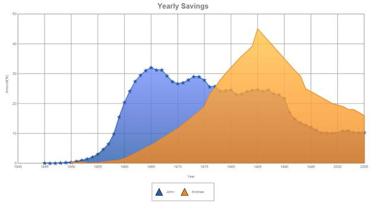

Symbols rendered in the series data points can be customized by using the following properties.
|
Chart Legend Property |
Description |
Property Type |
Value it Accepts |
Dependencies |
|
Visible |
Gets or sets if the symbol is visible or not. |
Bool |
True False |
NA |
|
Shape |
Gets or sets the shape of the symbol. |
SymbolShape |
SymbolShape.Circle SymbolShape.Cross SymbolShape.Wedge |
Visible—Only applies if symbol is visible. |
|
Size |
Gets or sets the size of symbol. |
Size |
SizeObject |
Visible—Only applies if symbol is visible. |
|
Style |
Gets or sets the style of the symbol which includes the border, interior, line cap, line join, opacity, and shadow. |
Style |
StyleObject |
Visible—Only applies if symbol is visible. |
Symbols can be added to the series using the following code.
|
[C#] series.Symbol.Visible = true; series.Symbol.Size = new System.Drawing.Size(10, 10); series.Symbol.Shape = SymbolShape.Star;
|
|
[VB] series.Symbol.Visible = true; series.Symbol.Size = new System.Drawing.Size(10, 10); series.Symbol.Shape = SymbolShape.Star;
|

Figure 20: Symbol Customization